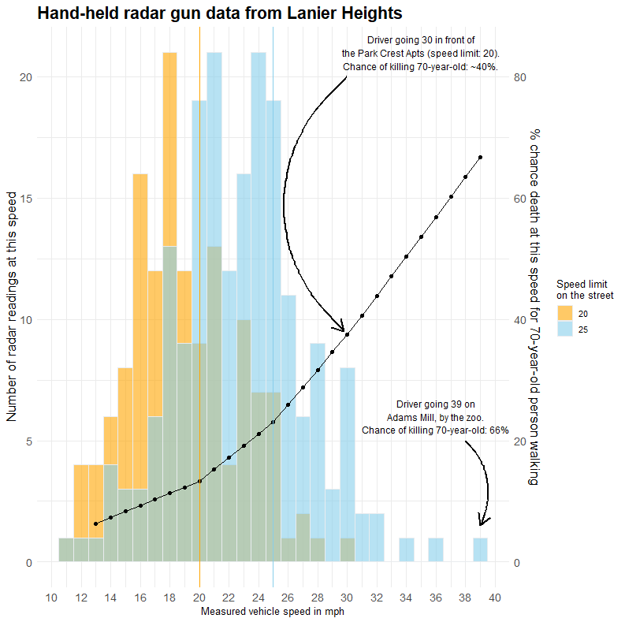

Civic Technology Critique
“What makes technology “civic,” “social impact,” or “public interest” technology rather than simply software?”
Having worked professionally in spaces closely adjacent to “civic tech” I will attempt to define civic tech, social impact tech, and public interest tech, through the lens of three projects of which I’ve been a part: research at “Civic Tech DC;” social impact product development for CommCare (commcare.dimagi.com); and experimentation at the City of Boston’s Office of Emerging Technology. All three of these efforts were united by a goal to deliver value to the “public” by using technology as a method – one which helped us deliver that value in ways that would be impossible, or at least very hard, to do without new technology. However, as I’ll show below, each of these efforts defined “value” in different ways, and the people and communities that make up “the public” differ greatly in each situation.
First, civic technology – in my experience, civic tech is not about building software that is used by or in government. Instead, it is about leveraging technology resources like software or data to shine a light on government’s work or the needs of residents. As McGuinness and Schank point out, the Civic Tech space blossomed in the early 2000s with the rise of Open Data published by American municipalities. Many civic technologists leveraged this newly available data to show where governments were failing to deliver basic services to residents, through novel data analysis, engaging visualizations and data-forward story telling. I witnessed this firsthand while participating in Civic Tech DC’s meetups in 2024. One of the group’s members, Pete Rodrigue, produced an analysis of Open Data DC’s traffic enforcement data to answer the question: “What impact have DC’s Automated Enforcement Traffic Cameras had on the city’s road safety?”

Example graph from Rodrigue’s analysis.
Rodrigue’s analysis and subsequent OpEd article leveraged a form of government transparency – in this case, Open Data DC – to analyze a topic of intense political interest and provide policy insights that were publicly-beneficial. In the case of Rodrigue’s work with Civic Tech DC, what makes his use of technology “civic” is that it is contributing knowledge to the public sphere, on topics of immediate relevance to DC residents and politicians alike.
Social impact technology is, for me, harder to define – it brings to mind technical folks working for, or with, nonprofit institutions. Perhaps on topics that governments and the private sector have failed to address. In the late 2010s, I worked at a “tech-for-good social enterprise” called Dimagi, designing their CommCare software (a medical record system designed for low-resource communities without internet connectivity). The assumption in this space, which was crowded with Dimagi’s competitors prior to the demise of USAID, was that governments in developing countries were not capable of producing (or procuring) effective health technology themselves, and so it needed to be built by outside consultants. Yet this work was funded by large donors, usually based in North America and Europe, meaning our tech team was accountable to the project funders – e.g. the Gates Foundation – not the governments deploying our medical records technology, nor the frontline workers using it in the field. Herein lies the inherent tension of “social impact tech” for me: ostensibly, the problem we at Dimagi were addressing was that frontline health workers lack good medical records tools. But the real issue we were touching on was the under-resourced governments that lacked the people or funding to manage their own health records system. The solution we developed, CommCare, was an excellent fit for the technical problem of medical records in low-resource settings; it was a terrible way, however, to address the latter issue of under-resourced governments. During my time at Dimagi, I often struggled with McGueiness and Harsh’s notion that “new tools won’t fix a broken policy or a convoluted process, just as overlaying a microprocessor on top of a Rube Goldberg device won’t make the device more efficient” (Preface, xiii). Yet our technical team at Dimagi continued down this track because our success was, ultimately, judged by our funders rather than the frontline health workers or government IT managers that might have guided us in a different direction.
Public interest technology is the label under which I feel most professionally aligned. This summer I was a Technology Fellow at the City of Boston’s Office of Emerging Technology. Our team developed tech-based products and services for the City’s transportation planners and engineers. We chose projects that were less about IT-related services, in favor of those very focused on helping City staff better understand Boston residents and deliver to those residents better mobility insights and transportation data. Working within government at City Hall had two important impacts. First, because our work came from within municipal government, it was appointed officials – in our case Boston’s CIO – who were ultimately accountable for the consequences (good or bad) of our work. The result was that our team worked extensively to ensure privacy protections were honored and legal guidance was followed, while plans were shared widely with many city departments and residents alike. Second, working within government allowed us to deeply understand the problem space and gave us direct provenance over the solutions we proposed – in a way that Dimagi never could (donors determined the problem) and that Civic Tech could only hope for (Civic Tech DC excelled at diagnosing the issues, but could not roll out new government tools or services).
In summary, having touched each of these three fields personally, I would propose the following: Civic Tech is advocate-oriented, intended to shine a light (from the outside) on issues or opportunities related to government and the residents it serves. This hyper focus, however, leads Civic Tech to occasionally suffer from a narrow mindset defined by whoever is driving the project. Conversely, Social Impact Tech is intensely user and community-focused, but relies on outside talent or funding that can misdiagnose issues or design elegant solutions to superficial problems. Lastly, public interest tech is driven from within government, and consequently must deal with all the layers of bureaucracy that comes with it. But because of those layers, it has the potential to deliver at a much larger scale and with higher impact and greater durability.
References
Costanza-Chock, Sasha, Maya Wagoner, Berhan Taye, Caroline Rivas, Chris Schweidler, Georgia Bullen, et al. (2018). #MoreThanCode: Practitioners Reimagine the Landscape of Technology for Justice and Equity.
Tara Dawson McGuinness & Hana Schank, Power to the Public: The Promise of Public Interest Technology (Princeton University Press, 2021).
Return Home